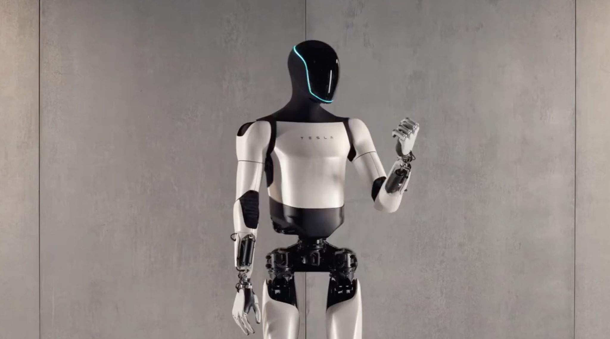
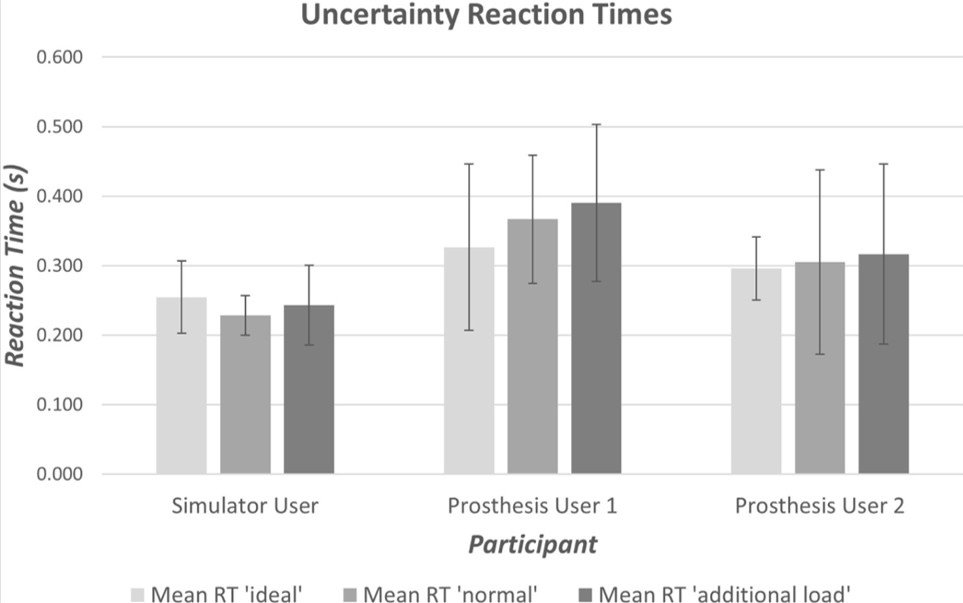

Abstract
Where engineering meets biology
My article looks at three pieces of tech that I really found interesting, which try to mimic human features. Aside from the most popular case of this which is obviously A.I which has been analysed to death, my article covers more physical traits like humanoid robots, advanced electronic skin as well as advanced prosthetics and not just what they are, but how they work what problems they cna solve. Additionally, I discuess the future of these technologies and their issues.
Brief Intro
Recently there have been serious progress in making technology which takes ideas from biology and uses them for engineering. In my article I will explain how recent technologies have attempted to imitate human movement, touch and muscle movements.
Humanoid Robots and Electronic Skin
Humanoid robots are machines that directly try to imitate the appearance of a human by having not just a body but arms and legs. These freaky and uncanny robots are very complicated for a lot of reasons. Firstly, by having legs it has to constantly try to keep its balance using sensors whilst also using cameras to recognise the environment it’s in as well as obstacles so it doesn’t just walk into a table or something. Successful robotic walking is reliant on planning movements while also reacting to changes to the environments (Stasse, O., Giraud-Esclasse, K., Brousse, E., Naveau, M., Régnier, R., Avrin, G. and Souères, P., 2018, ‘Benchmarking the HRP-2 Humanoid Robot During Locomotion’, Frontiers in Robotics and AI, 5, Article 122. Date accessed: 15/07/2026). These robots also use joints which can somehow become stiff or flexible just like how human joints can tense and relax (Rodriguez-Cianca, D., Weckx, M., Jimenez-Fabian, R., Torricelli, D., Gonzalez-Vargas, J., Sanchez-Villamañan, M.C., Sartori, M., Berns, K., Vanderborght, B., Pons, J.L. and Lefeber, D., 2019, ‘A Variable Stiffness Actuator Module with Favorable Mass Distribution for a Bio-Inspired Biped Robot’, Frontiers in Neurorobotics, 13, Article 20. Date accessed: 16/07/2026).
The ideal purposes of these robots is for very dangerous, exhausting and or repetitive work like in responses to disasters, typical industrial factory work or even for healthcare like with the Tesla Bot but oddly enough, very recently the Chinese company Ubtech has introduced luxury companion robots which is just disturbing.

Elonbuzz. (2026) Elon Musk Announces 2026 Tesla Optimus Bot Gen 3 . Available at: https://elonbuzz.com/elon-musk-announces-2025-tesla-optimus-bot-gen-3-under-2579/ https://elonbuzz.com/elon-musk-announces-2025-tesla-optimus-bot-gen-3-under-2579/ (Accessed: 31/07/2026).
Humans don’t really think about it but the human skin is actually a really effective way of signalling changes in pressure or temperature which actually makes it a really useful sensor if it could be replicated for robots / prosthetics. For what I looked into, they use flexible materials which when pressed, stretched, heated and or cooled change its electrical resistance. Using a bunch of different sensors like thermistors with this material, these changes can be measured and processed (Wang, X., Dong, L., Zhang, H., Yu, R., Pan, C. and Wang, Z.L., 2015, ‘Recent Progress in Electronic Skin’, Advanced Science, 2(10), Article 1500169. Date accessed: 16/07/2026). This is a very particularly important solution to teaching robots how hard to hold onto something since using cameras like I previously mentioned are good for being able to tell the robots that its holding something but without advanced sensors like this electronic skin, it wouldn’t be able to tell how much pressure its gripping that object with.
This technology however isn’t just about improving humanoid robots like I mentioned before but also in prosthetic limbs and some very niche wearable health monitors.
Evaluation / Conclusion
Typically when people think of prosthetics they think of mechanical onces where individual parts don’t actually move a lot like a prosthetic for a leg or hand not really moving. However some people will probably of heard about really expensive prosthetics which can move based off of electrical signals from the persons actual severed muscle. These prosthetics are called myoelectric prosthetics and they work by trying to detect very faint signals from the muscle and strengthening them and using them for actual movements. A really good example of this is like a prosthetic hand which can pick up muscle signals at the severed wrist and somehow convert it into hand movements and gestures (Geethanjali, P., 2016, ‘Myoelectric Control of Prosthetic Hands: State-of-the-Art Review’, Medical Devices: Evidence and Research, 9, pp. 247–255. Date accessed: 15/07/2026).
This is a really good / ethical example of the types of technologies I looked into which mimic humans since it often is used with war veterans or the victims of serious disasters since it can make people be able to drink out of a cup or use a knife and fork again. Unfortunately, the types of signals that these prosthetics try and pick up are often so faint that they can always be reliable so this technology still has some way to go (Chadwell, A., Kenney, L., Thies, S., Galpin, A. and Head, J., 2016, ‘The Reality of Myoelectric Prostheses: Understanding What Makes These Devices Difficult for Some Users to Control’, Frontiers in Neurorobotics, 10, Article 7. Date accessed: 15/07/2026).

Chadwell, A., Kenney, L., Thies, S., Galpin, A. and Head, J., 2016 ‘The Reality of Myoelectric Prostheses: Understanding What Makes These Devices Difficult for Some Users to Control’, Frontiers in Neurorobotics, 10, Article 7, Figure 9. Date accessed: 15/07/2026 . Available at: https://www.frontiersin.org/files/Articles/214344/xml-images/fnbot-10-00007-g009.webp (Accessed: 22/07/2026).
Conclusion
Humanoid robots, advanced electronic skin and myoelectric prosthetics try to copy some human characteristic whether its our appearance, our ability to feel or our ability to move based off of our muscle. Each have their own unique and even gross reasons for existing but overall, they exist because copying some of our features can seriously help us tackle some of our problems. While they each have they own limitations, robots can’t move as naturally as us, nor is their electronic skin as durable and prosthetics cant send signlas of feeling back to the user the same way a real human limb could, hopefully in the future these technologies can be perfected to ideally solve some of our problems and not create others (the most obvious of which is replacing humans for work). Overall their success in the long run will be very dependant on making them reliable as well as cheaper and safer but I do believe it is worth it for the most part.
Word Count
Calculating...
References
- [1] Chadwell, A., Kenney, L., Thies, S., Galpin, A. and Head, J., 2016, ‘The Reality of Myoelectric Prostheses: Understanding What Makes These Devices Difficult for Some Users to Control’, Frontiers in Neurorobotics. Date accessed: 15/07/2026. Available at: https://www.frontiersin.org/journals/neurorobotics/articles/10.3389/fnbot.2016.00007/full
- [2] Geethanjali, P., 2016, ‘Myoelectric Control of Prosthetic Hands: State-of-the-Art Review’, Medical Devices: Evidence and Research. Date accessed: 15/07/2026. Available at: https://pmc.ncbi.nlm.nih.gov/articles/PMC4968852/
- [3] Lucarotti, C., Oddo, C.M., Vitiello, N. and Carrozza, M.C., 2013, ‘Synthetic and Bio-Artificial Tactile Sensing: A Review’, Sensors. Date accessed: 15/07/2026. Available at: https://www.mdpi.com/1424-8220/13/2/1435
- [4] Rodriguez-Cianca, D., Weckx, M., Jimenez-Fabian, R., Torricelli, D., Gonzalez-Vargas, J., Sanchez-Villamañan, M.C., Sartori, M., Berns, K., Vanderborght, B., Pons, J.L. and Lefeber, D., 2019, ‘A Variable Stiffness Actuator Module with Favorable Mass Distribution for a Bio-Inspired Biped Robot’, Frontiers in Neurorobotics. Date accessed: 16/07/2026. Available at: https://www.frontiersin.org/journals/neurorobotics/articles/10.3389/fnbot.2019.00020/full
- [5] Stasse, O., Giraud-Esclasse, K., Brousse, E., Naveau, M., Régnier, R., Avrin, G. and Souères, P., 2018, ‘Benchmarking the HRP-2 Humanoid Robot During Locomotion’, Frontiers in Robotics and AI. Date accessed: 15/07/2026. Available at: https://www.frontiersin.org/journals/robotics-and-ai/articles/10.3389/frobt.2018.00122/full
- [6] Wang, X., Dong, L., Zhang, H., Yu, R., Pan, C. and Wang, Z.L., 2015, ‘Recent Progress in Electronic Skin’, Advanced Science. Date accessed: 16/07/2026. Available at: https://pmc.ncbi.nlm.nih.gov/articles/PMC5115318/